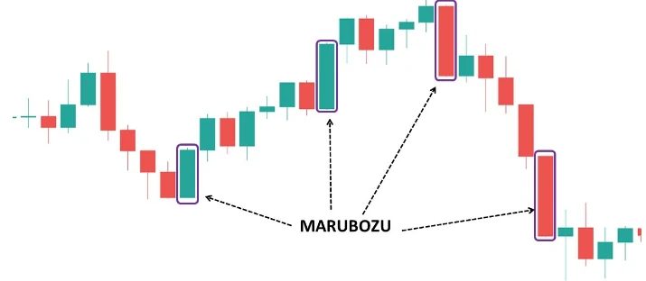

The four values
- Open: opening price.
- Close: closing price.
- High: highest price during the period.
- Low: lowest price during the period.
A candle shows how price moved during the selected period. Its shape may suggest whether buyers or sellers had the upper hand, but its meaning depends on where it appears.
Every candle contains four key price values.
One H1 candle represents one hour, while one D1 candle represents one day. The same pattern can carry different significance on different timeframes.
They may show price rejection, but they need context.
A small body, a long lower shadow and a short upper shadow. After a decline, it may show that buyers pushed price back up.
It is more meaningful near support and after the candle closes. The next candle may provide confirmation.
A small body and a long upper shadow after a decline. It shows an attempt to move higher, but not an automatic reversal.
Wait for confirmation from subsequent candles or market structure.
It resembles a Hammer but appears after an advance. The long lower shadow suggests sellers managed to push price down during the period.
A small body and a long upper shadow after an advance. It may indicate rejection of higher prices.


Open and Close are very close to each other.
A Doji shows indecision: price may have moved both up and down during the period but closed near its opening level. By itself, it is neither a BUY nor a SELL signal.
After a strong move, a Doji may suggest a pause or indecision. It is more interesting at important support or resistance, but further confirmation is still needed.

A candle with very small or no wicks.
A strong upward body. Buyers controlled almost the entire period.
A strong downward body. Sellers controlled almost the entire period.

A candle is evidence of a reaction, not a complete strategy on its own.
Selling at every Shooting Star or buying at every Hammer. A pattern is more meaningful when it appears in an appropriate area and is confirmed.
A Shooting Star appears in the middle of a sideways range. Is that enough for a SELL?
Answer: No. Context, a key level and confirmation are needed.